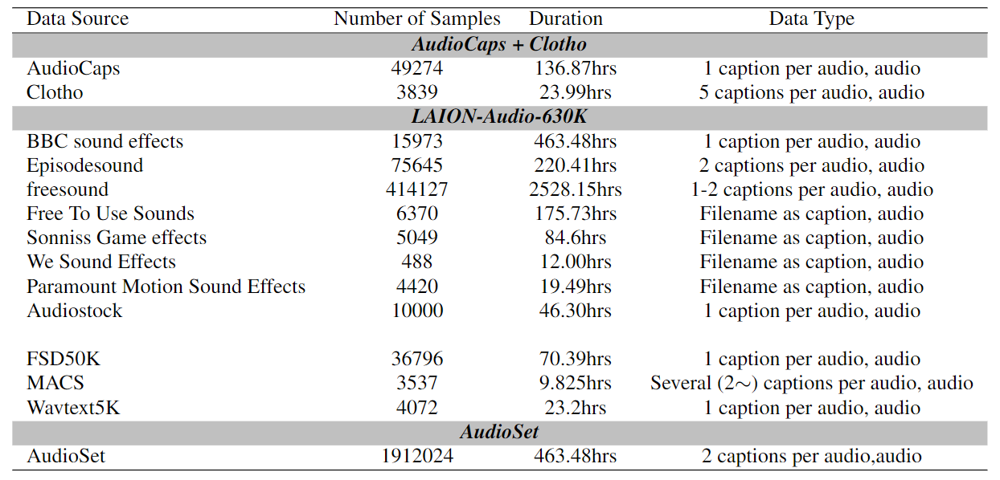
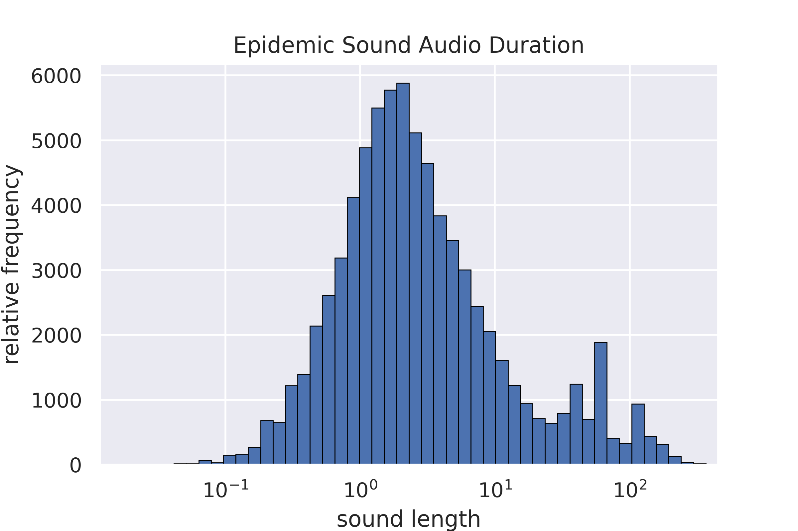
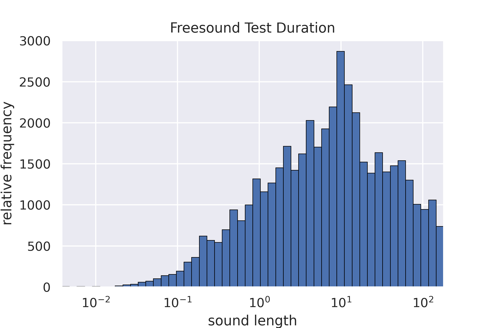
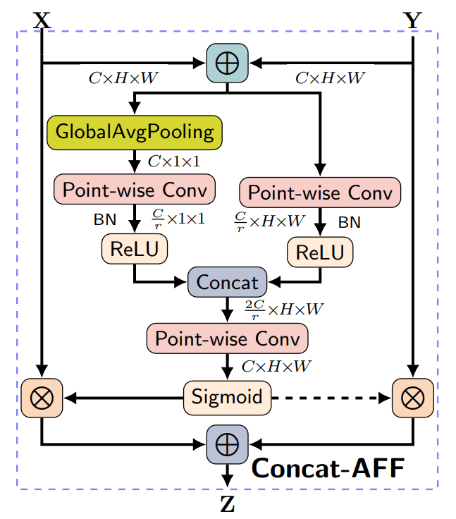
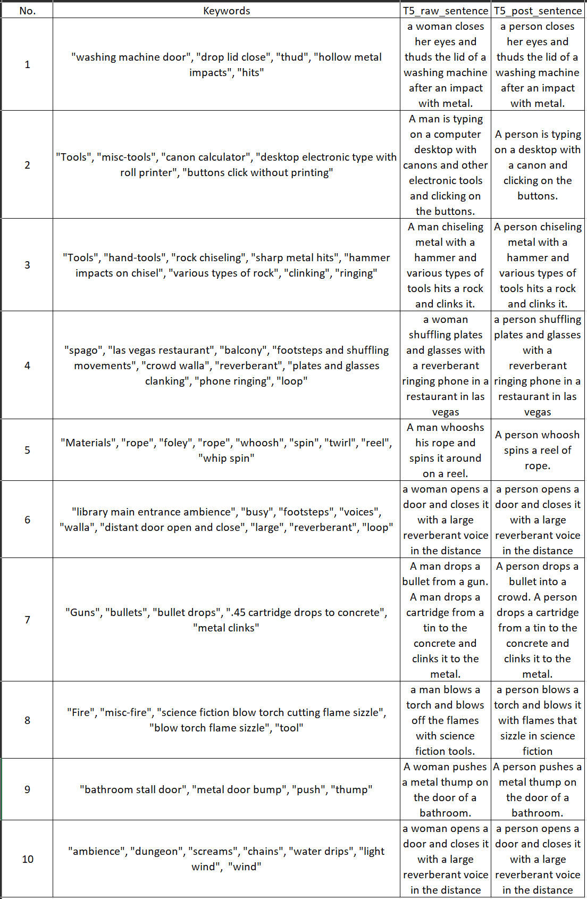
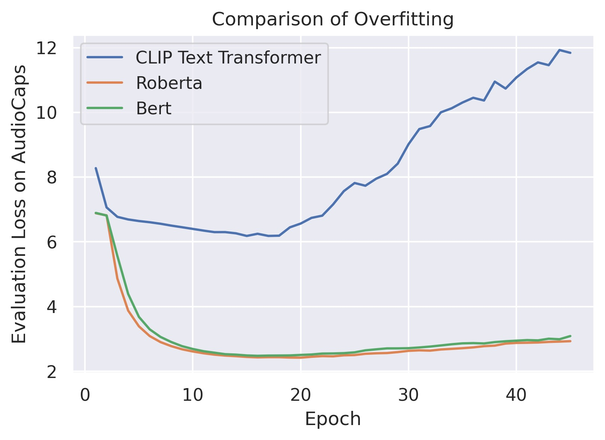
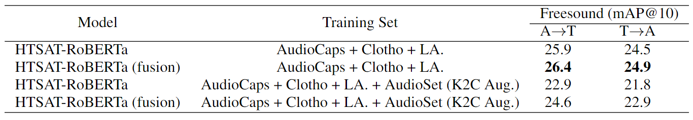
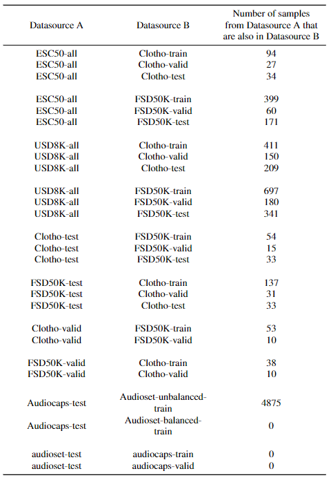

Large Scale Contrastive Language-Audio Pretraining with Feature Fusion and Keyword-to-Caption Augmentation
In this page, we give additional introductions to our submission paper of ICASSP:
(1) Some detail information of the proposed dataset LAION-Audio-630K, and training settings during the experiment stage.
(2) Some examples of keyword-to-caption augmentation by the T5 text generation model.
(3) Some additional experiments and analysis, which are not the main part of the paper but contributes to our conclusion.
Due to the page limit, we are not able to include above information in the paper. We appreciate the checking of this appendix page if reviewers find it avaiable and valuable to know more information about the submission.
Code and Dataset
As mentioned in the abstract of the submission, we open-source all codes and the dataset LAION-Audio-630K in the below links:
(1) Code: https://github.com/LAION-AI/CLAP
(2) LAION-Audio-630K: https://github.com/LAION-AI/audio-dataset
Details of LAION-Audio-630K
Regarding the section 2.1 and section 2.2 of the submisson:
(1) We list the specifications of website/sources from which we collect the audio samples and text captions for LAION-Audio-630K in Table 1.
(2) We list the detail of three datasets in Table 2. We use the combination of them to train the model in the section 4 of the submission.
Table 1: the composition of the proposed dataset LAION-Audio-630K.

Table 2: the detail of training datasets.
Regarding the section 3.4 of the submissin, we present the distribution of audio length on Epidemic Sound and Freesound, as parts of LAION-Audio-630K, to demonstrate the existence of variable-length problem in audio data processing and model training.

Figure 1: the audio length distribution of Epidemic Sound.

Figure 2: the audio length distribution of Freesound.
Attentional Feature Fusion
Regarding the section 3.4 of the submission, we demonstrate the "attentional feature fusion" architecture, a two-branch CNN network, to show how we combine the global information and the local information of input audios together.
The fusion architecture acceptes two inputs: X is the global information, and Y is the merged local information. Two inputs are sent to two CNN networks to generate the coefficient, then X and Y are added by this coefficient.

Figure 3: the attentional feature fusion architecture from the paper "Yimian Dai et al., Attentional Feature Fusion, WACV 2021."
Examples of Keyword-to-Caption Augmentation
Regarding the section 3.5 of the submission, we show some examples of keyword-to-caption by T5 model from AudioSet labels. And the de-biased version for the model training.
Additionally, when applying keyword to caption, we excluded samples shorter than 2 seconds, as we found in such case the audio is merely a single event, thus matching poorly with the caption generated.
When using keyword to caption in training dataset including audioset, we use only the captions generated by keyword to caption and exclude the captions generated by template.

Table 3: examples of keyword-to-caption augmentation from AudioSet labels and the de-biased version for the model training.
Loss Trend of Different Audio/Text Encoder Combinations.
Regarding to the section 4.2 of the submission, we conduct different combinations of audio encoders (PANN, HTSAT) and text encoders (CLIP Transformer, BERT, RoBERTa) to find the best basic setting of the contrastive language-audio pretraining model.
The final decision is to use the RoBERTa, as we see the result on CLIP Transformer is not as good as the other two text encoders. We further visualize the loss trends of these three text encoders (+ PANN audio encoder) on the AudioCaps evaluation set below.
We demonstrate that the worse result from CLIP Transformer is because of the overfitting issue, as the CLIP Transformer is trained by OPEN-AI's large-scale image-text dataset with the size of about 4 billion. This makes the audio encoder hard to learn a cross-modal representation because the text encoder is already very powerful.
Compared to CLIP Transformer, RoBERTa and BERT seem to be a better choice as it has more generalization ability brought by the large-scale text pretraining instead of contrastive learning between text and image data.

Figure 4: the evaluation loss trend of three text encoders (+ PANN encoder) on the AudioCaps evaluation set.
Attentional Experiment of feature fusion on Freesound Dataset
Regarding to the section 4.2 of the submission, to further evaluate the efficacy of feature fusion, apart from AudioCaps and Clotho datasets, we further evaluate our model on Freesound evaluation set, which contains more than 10-sec audio samples (similar to Clotho dataset).
The result is shown in the below table, the notation is the same as the Table 3 in our submission paper.
From this table, we can further prove that the feature fusion can improve the retrieval performance on the Freesound dataset. The performance on Freesound dataset shares a similar trend with that on Clotho dataset:
(1) the performance trained on "AudioCaps + Clotho + LA." is better than that trained on "AudioCaps + Clotho + LA. + AudioSet". As demonstrate in the section 4.2, similar to Clotho, the Freesound dataset contains audio samples that are different from AudioSet, adding the AudioSet into the training will move the model's distribution
out of general audio data to AudioSet-like audio data, such decreasing the perfomance.
(2) the performance with feature fusion is better than that without feature fusion, as the Freesound dataset contains the samples larger than 10-secs, which is the same to Clotho dataset.
Their performance trend are similar.

Table 4: the text-to-audio retrieval performance on Freesound evaluation set.
Experiment Settings on Data Exclusion
Regarding the section 4.3 of the submission, We excluded all the overlap samples and perform zero-shot evaluation on the whole remaining dataset. The below table shows the detail of it.

Table 4: The overlaps between the training data and the zero-shot evaluation data, we excluded all these overlaps from the evalation sets to calculate the audio classification metrics.
Acknowledgement
Yusong Wu, Ke chen, Tianyu Zhang are opensource contributors to LAION projects.
Our codebase is build on following open-source projects:
(1) PANN(2) HTSAT(3) open-clip(4) PyTorch
We would like to thank the support of computation infrastructure from LAION, Stability.ai and Summit cluster from Oak Ridge National Laboratory.
We would like to thank Christoph Schuhmann, Richard Vencu, Irina Rish, Romain Beaumon, as this project would not be possible without them.
We would like to thank all the community contributors for contributing the collection of LAION-630k dataset.
Those community contributors include but not limited to: [TODO Yuchen]. We would like to thank Xinhao Mei for explaining and helping on retrieval metrics.